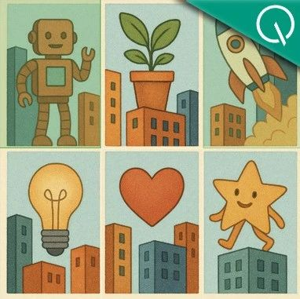

wechat
RMoA残差提取Mixture-of-Agents，让Agent发现新东西，并自适应停止「ACL2025」
Published: 2025-06-04T20:13:18.000Z
华东师范大学、美团等机构联合提出RMoA（Residual Mixture-of-Agents）框架，旨在解决传统MoA高成本与性能瓶颈。RMoA引入残差学习理念，通过多样性选择、残差提取与聚合智能体及自适应终止机制，使智能体专注于发现并贡献独特新信息。该框架在多个基准测试中显著提升性能并大幅降低计算成本，其强调成本控制与认知多样性，并在实际场景中验证了高效性与实用性，为AI系统发展提供了新思路。
人物｜王鹤：北大90后教授，12亿资本押宝的银河通用创始人，拒绝模仿特斯拉，闯出中国具身智能新范式
Published: 2025-06-04T13:04:29.000Z

90后北大教授、银河通用创始人王鹤，正开创具身智能新范式。他拒绝模仿特斯拉人形机器人，转而聚焦轮式底盘与机械臂的实用性，强调“边研发边落地”的商业策略。王鹤在斯坦福期间首创NOCS模型，提升机器人抓取泛化能力；回国后，其公司18个月内融资超12亿，并推出全球首个基于合成数据预训练的具身大模型GraspVLA，大幅提升研发效率与泛化性。Galbot机器人已与美团等合作，展现出强大的商业化潜力，推动中国具身智能从实验室走向市场。
昇腾+鲲鹏联手上大招！华为爆改MoE训练，吞吐再飙升20%，内存省70%
Published: 2025-06-04T06:38:25.000Z
华为通过昇腾与鲲鹏算力深度协同，在MoE模型训练方面取得重大突破。针对MoE训练面临的算子计算效率低、NPU内存不足等挑战，华为提出“瘦身术”、“均衡术”、“搬运术”三大算子优化策略，并创新性地实现了Host-Device协同的算子下发优化及Selective R/S精准内存手术。这些技术使得MoE训练吞吐量再提升20%，内存占用降低70%，显著提升了大规模MoE模型训练效率与资源利用率，为AI大模型发展提供了高效解决方案。
单卡搞定万帧视频理解！智源研究院开源轻量级超长视频理解模型Video-XL-2
Published: 2025-06-04T05:22:38.000Z
智源研究院联合上海交通大学等机构发布了新一代超长视频理解模型Video-XL-2，旨在解决现有开源模型在长视频理解方面的短板。该模型在单张显卡上即可高效处理万帧视频输入，编码2048帧仅需12秒，展现出卓越的运行效率和可扩展性。Video-XL-2通过创新的架构设计（视觉编码器、动态Token合成模块、大语言模型）和四阶段渐进式训练策略，显著提升了对长视频内容的理解能力。其引入的分段式预装填和双粒度KV解码机制，有效降低了计算成本和显存开销。在多项主流长视频评测基准上，Video-XL-2全面超越现有轻量级开源模型，并接近甚至超越部分720亿参数规模的大模型，在影视内容分析、异常行为监测等领域具有广阔应用前景。
GPT-4o连验证码都解不了？？SOTA模型成功率仅40%
Published: 2025-06-04T05:22:38.000Z

MetaAgentX团队推出Open CaptchaWorld平台，旨在解决当前多模态Agent在真实网页环境中应对人机验证（CAPTCHA）的难题。该平台作为首个专注于“多模态交互智能体×CAPTCHA问题”的开放式研究平台，通过模拟真实Web浏览环境，系统评估Agent解题能力。实测显示，人类平均成功率达93.3%，而包括GPT-4o在内的SOTA多模态模型平均仅5%-40%，暴露出现有Agent在高交互、高动态场景中缺乏人类式抽象与控制能力的显著劣势。Open CaptchaWorld提供了大规模多样化验证码数据集及新评估指标，强调若Agent无法通过验证码，将难以在实际应用中落地，呼吁未来模型设计需关注效率与性能协同优化。
英伟达揭示RL Scaling魔力！训练步数翻倍=推理能力质变，小模型突破推理极限
Published: 2025-06-04T04:42:28.000Z
英伟达ProRL框架通过大幅延长强化学习（RL）训练步数，颠覆了RL对大语言模型推理能力提升有限的传统认知。该研究表明，长期且稳定的RL训练能显著拓展小模型的推理边界，使其在数学、编程、逻辑推理等复杂任务上表现超越甚至赶超更大模型。ProRL成功的关键在于引入多样化可验证奖励、优化算法组合及正则化机制。研究发现，RL不仅能提升模型已有能力，更能催生新能力，尤其在基础模型表现较弱的任务上效果显著，并促进模型生成更具创造性的解题路径。这为开发高性能、低成本的小型语言模型提供了新途径。
huggingface
视觉具身大脑：让多模态大语言模型在空间中看、思考和控制
Published: 2025-05-30T18:00:34.000Z

多模态大语言模型（MLLMs）的显著进展，使其在扩展到腿式机器人等物理实体方面引起了越来越多的关注。这通常要求MLLMs不仅要掌握多模态理解能力，还要整合视觉空间推理和物理交互能力。然而，现有方法由于其根本差异，难以统一这些能力。在本文中，我们提出了视觉具身大脑（VeBrain），一个用于真实世界中感知、推理和控制的统一框架。VeBrain将机器人控制重构为2D视觉空间中常见的基于文本的MLLM任务，从而统一了不同任务的目标和映射空间。随后，提出了一种新颖的机器人适配器，用于将MLLMs的文本控制信号转换为真实机器人的运动策略。从数据角度来看，我们进一步引入了VeBrain-600k，这是一个高质量的指令数据集，涵盖了VeBrain的各种能力。在VeBrain-600k中，我们花费数百小时收集、整理和标注数据，并采用多模态思维链（CoT）将不同能力混合到单个对话中。在13个多模态基准和5个空间智能基准上的大量实验表明，VeBrain的性能优于现有MLLMs，如Qwen2.5-VL。当部署到腿式机器人和机械臂时，VeBrain与现有方法相比，展现出强大的适应性、灵活性和组合能力。例如，与Qwen2.5-VL相比，VeBrain不仅在MMVet上取得了5.6%的显著提升，而且在腿式机器人任务中也取得了平均50%的卓越增益。
GUI-Actor：面向GUI智能体的无坐标视觉定位
Published: 2025-06-03T17:59:08.000Z

构建VLM驱动的GUI智能体的主要挑战之一是视觉定位，即根据视觉内容和文本计划，定位用于执行操作的适当屏幕区域。大多数现有工作将其表述为基于文本的坐标生成任务。然而，这些方法存在一些局限性：空间语义对齐弱、无法处理模糊的监督目标，以及屏幕坐标的密集性与Vision Transformers等模型提取的视觉特征的粗粒度（补丁级别）之间的不匹配。在本文中，我们提出了GUI-Actor，一种基于VLM的无坐标GUI定位方法。GUI-Actor的核心是引入了一个基于注意力的动作头，它学习将一个专用的 token与所有相关的视觉补丁token对齐，使模型能够在一次前向传播中提出一个或多个动作区域。与此相符，我们进一步设计了一个定位验证器，用于评估并从为动作执行提出的候选区域中选择最合理的动作区域。大量实验表明，GUI-Actor在多个GUI动作定位基准测试中优于先前的最先进方法，并且对未见的屏幕分辨率和布局具有更好的泛化能力。值得注意的是，GUI-Actor-7B在ScreenSpot-Pro上甚至超越了UI-TARS-72B（38.1），在使用Qwen2-VL和Qwen2.5-VL作为骨干网络时分别达到了40.7和44.6的分数。此外，通过引入验证器，我们发现仅微调新引入的动作头（对于7B模型约1亿参数），同时保持VLM骨干网络冻结，足以达到与先前最先进模型相当的性能，这突出表明GUI-Actor可以在不损害其通用能力的情况下，赋予底层VLM有效的定位能力。
Robot-R1：强化学习增强机器人具身推理能力
Published: 2025-05-29T16:41:12.000Z

大型视觉-语言模型（LVLMs）近期在结合具身推理与机器人控制方面展现出巨大潜力，从而推动了机器人技术的发展。一种常见方法是利用监督微调（SFT）在与机器人控制相关的具身推理任务上进行训练。然而，SFT数据集通常是启发式构建的，并未明确优化以提升机器人控制性能。此外，SFT常导致灾难性遗忘和泛化性能下降等问题。为解决这些局限性，我们引入了Robot-R1，这是一个新颖的框架，它利用强化学习专门增强机器人控制中的具身推理能力。Robot-R1学习预测完成任务所需的下一个关键点状态，其预测基于当前场景图像和从专家演示中提取的环境元数据。受DeepSeek-R1学习方法的启发，Robot-R1对基于推理的响应进行采样，并强化那些能带来更准确预测的响应。我们的实验表明，使用Robot-R1训练的模型在具身推理任务上优于SFT方法。尽管只有70亿参数，Robot-R1在与低级动作控制相关的推理任务（如空间和基本运动推理）上甚至超越了GPT-4o。
自挑战语言模型智能体
Published: 2025-06-02T14:23:33.000Z

大型语言模型正迅速成为能够使用工具的智能体的基础。然而，训练此类智能体极具挑战性，因为它需要人工创建和标注多样化的任务、工具和评估标准。本文提出了一种自挑战框架，用于训练智能体处理其自身生成的高质量任务。智能体首先扮演挑战者的角色，在与给定工具交互后生成一个任务。这些任务以一种新颖的通用问题类别——“代码即任务”（Code-as-Task）的形式呈现，其定义包括指令、验证函数以及作为测试的解决方案和失败案例，从而仅筛选出高质量任务。随后，智能体扮演执行者的角色，利用评估反馈作为奖励，通过强化学习在这些任务上进行训练。在两个现有的多轮工具使用智能体基准测试M3ToolEval和TauBench上的评估表明，尽管仅使用自生成训练数据，自挑战框架在Llama-3.1-8B-Instruct上实现了超过两倍的性能提升。
深度视频发现：用于长视频理解的工具使用型智能体搜索
Published: 2025-05-23T16:37:36.000Z

长视频理解由于其广泛的时空复杂性和在扩展语境下回答问题的难度而面临重大挑战。尽管大型语言模型（LLMs）在视频分析能力和长语境处理方面取得了显著进展，但在处理信息密集的数小时视频时，它们仍表现出局限性。为了克服这些局限性，我们提出了深度视频发现（Deep Video Discovery, DVD）智能体，以利用对分段视频片段的智能体搜索策略。与以往手动设计固定工作流程的视频智能体不同，我们的方法强调智能体的自主性。通过在多粒度视频数据库上提供一套以搜索为中心的工具，我们的DVD智能体利用LLM的高级推理能力来规划其当前观察状态，策略性地选择工具，为动作制定适当的参数，并根据收集到的信息迭代地完善其内部推理。我们对多个长视频理解基准进行了全面评估，结果表明了整个系统设计的优势。我们的DVD智能体在具有挑战性的LVBench数据集上取得了最先进（SOTA）的性能，显著超越了现有工作。论文还提供了全面的消融研究和深入的工具分析，为进一步推进针对长视频理解任务的智能体提供了见解。代码将在稍后发布。
多模态深度研究员：基于智能体框架从零生成文本-图表交错报告
Published: 2025-06-03T05:18:19.000Z

可视化在概念和信息有效传达中扮演着至关重要的角色。推理和检索增强生成方面的最新进展使得大型语言模型（LLMs）能够进行深度研究并生成全面的报告。尽管取得了进展，但现有的深度研究框架主要侧重于生成纯文本内容，而文本与可视化交错内容的自动化生成仍未得到充分探索。这项新颖的任务在设计信息丰富的可视化以及将其与文本报告有效整合方面提出了关键挑战。为应对这些挑战，我们提出了可视化形式化描述（FDV），这是一种结构化的图表文本表示，使LLMs能够学习并生成多样化、高质量的可视化内容。基于这种表示，我们引入了多模态深度研究员（Multimodal DeepResearcher），这是一个智能体框架，将任务分解为四个阶段：（1）研究，（2）范例报告文本化，（3）规划，以及（4）多模态报告生成。为了评估生成的多模态报告，我们开发了MultimodalReportBench，它包含100个多样化主题作为输入，并配备了5个专用评估指标。跨模型和评估方法的广泛实验证明了多模态深度研究员的有效性。值得注意的是，在利用相同的Claude 3.7 Sonnet模型时，多模态深度研究员相对于基线方法取得了82%的总体胜率。